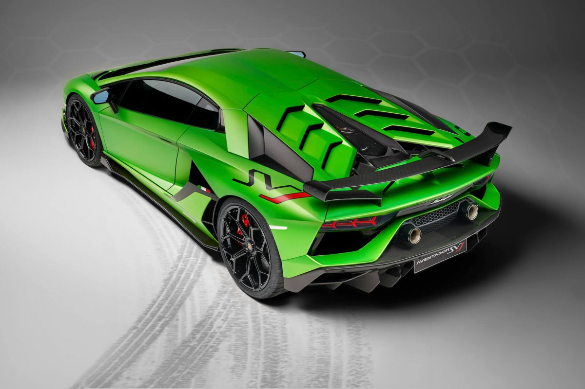
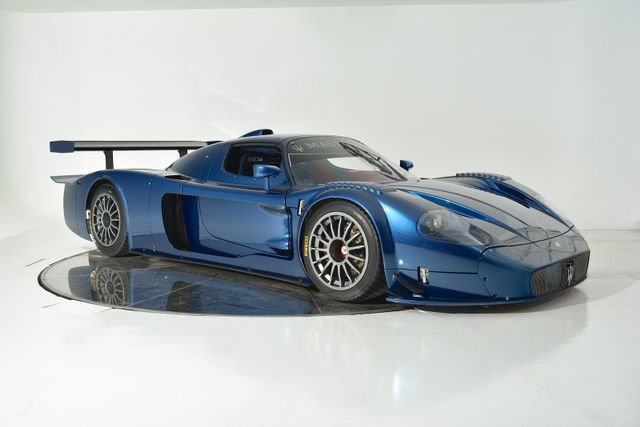
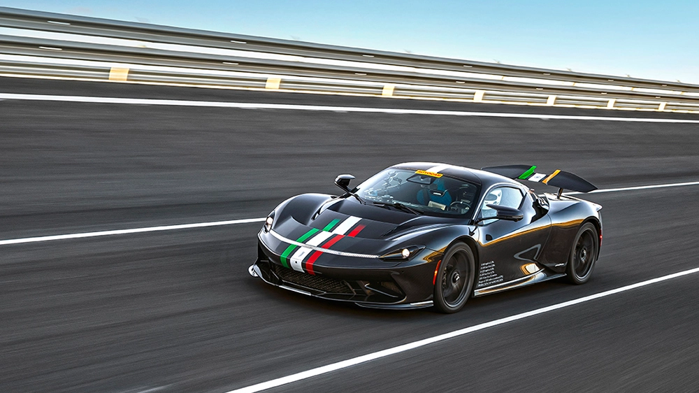

Ferrari is an Italian luxury sports car manufacturer based in Maranello, Italy. Founded in 1939 by Enzo Ferrari (1898–1988), the company adopted
its current name in 1945 and began producing its line of cars in 1947. Ferrari became a public company in 1960, and from 1969 to 2014 it was a subsidiary of Fiat S.p.A. It was spun off from Fiat's successor entity, Fiat Chrysler Automobiles, in 2016.
is an Italian luxury sports car manufacturer based in Maranello, Italy. Founded in 1939 by Enzo Ferrari (1898–1988), the company adopted its current name in 1945 and began producing its line of cars in 1947. Ferrari became a public company in 1960, and from 1969 to 2014 it was a subsidiary of Fiat S.p.A. It was spun off from Fiat's successor entity, Fiat Chrysler Automobiles, in 2016.
Horacio Pagani, who formerly managed Lamborghini's composites department, founded Pagani Composite Research in 1988. This new company worked with Lamborghini on numerous projects, including the restyling of the Lamborghini Countach 25th Anniversary Edition, the Lamborghini LM002, the P140 design concept, and the Diablo. In the late 1980s, Pagani began designing his own car, then referred to as the "C8 Project". Pagani planned to rename the C8 the "Fangio F1" to honour his friend, the Argentinian five-time Formula One champion, Juan Manuel Fangio.
Maserati is an Italian luxury vehicle manufacturer. Established on 1 December 1914, in Bologna, Italy,[4] the company's headquarters are now in Modena, and its emblem is a trident. br>The company has been owned by Stellantis since 2021. Maserati was initially associated with Ferrari. In May 2014, due to ambitious plans and product launches, Maserati sold a record of over 3,000 cars in one month. This caused them to increase production of the Quattroporte and Ghibli models.[5] In addition to the Ghibli and Quattroporte, Maserati offers the Maserati GranTurismo and two SUV models, the Maserati Levante (the first ever Maserati SUV) and the Maserati Grecale.[6] Maserati has placed a yearly production output cap at 75,000 vehicles globally.
Pininfarina is an Italian car design firm and coachbuilder, with headquarters in Cambiano, Turin, Italy. The company was founded by Battista "Pinin" Farina in 1930. On 14 December 2015, the Indian multinational giant Mahindra Group acquired 76.06% of Pininfarina S.p.A. for about €168 million.[2]
Pininfarina is employed by a wide variety of automobile manufacturers to design vehicles. These firms have included long-established customers such as Ferrari, Alfa Romeo, Peugeot, Fiat, GM, Lancia, Maserati, and NamX, to emerging companies in the Asian market with Chinese manufactures like AviChina, Chery, Changfeng, Brilliance, JAC and VinFast in Vietnam and Korean manufacturers Daewoo and Hyundai.And the man who was then still Pinin Farina became Ferrari's body designer, a stretch that continued after his death in 1966
 Horacio Pagani, who formerly managed Lamborghini's composites department, founded Pagani Composite Research in 1988. This new company worked with Lamborghini on numerous projects,
Horacio Pagani, who formerly managed Lamborghini's composites department, founded Pagani Composite Research in 1988. This new company worked with Lamborghini on numerous projects,